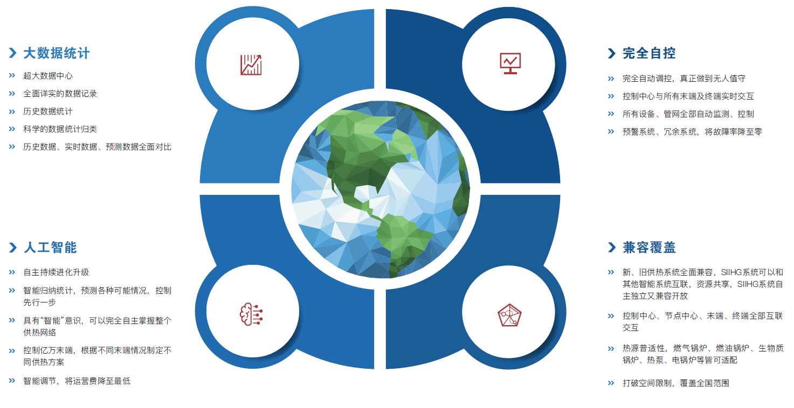
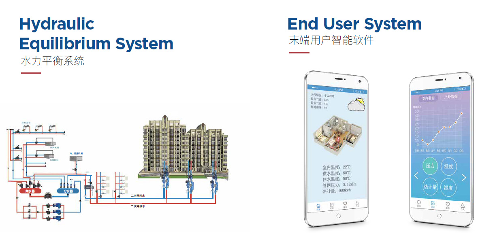
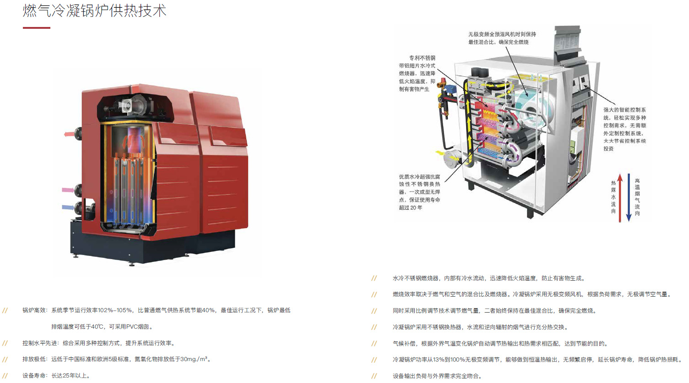
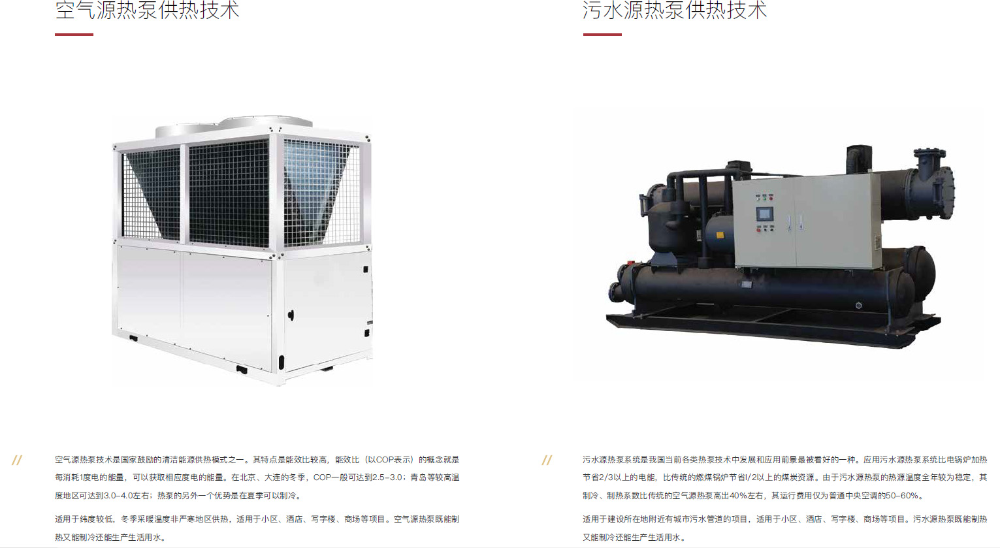
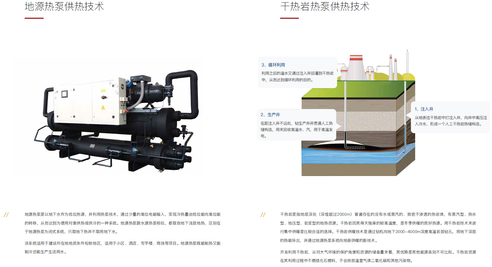
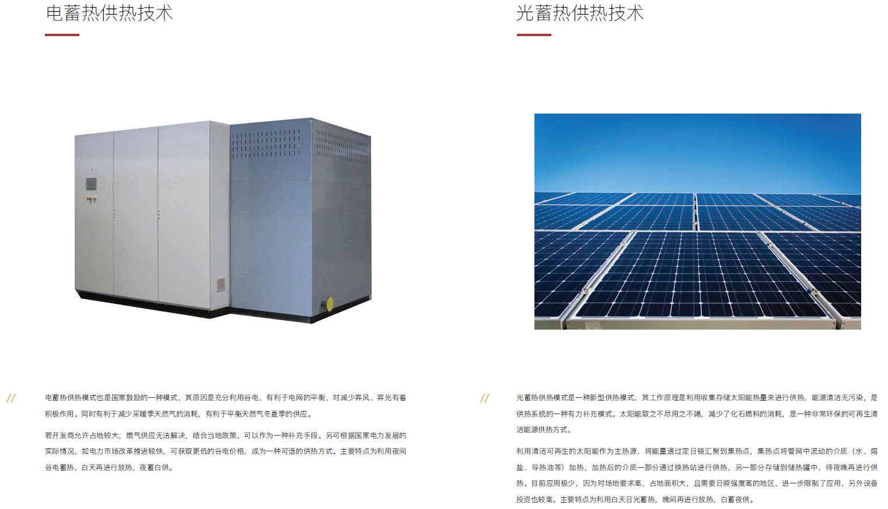
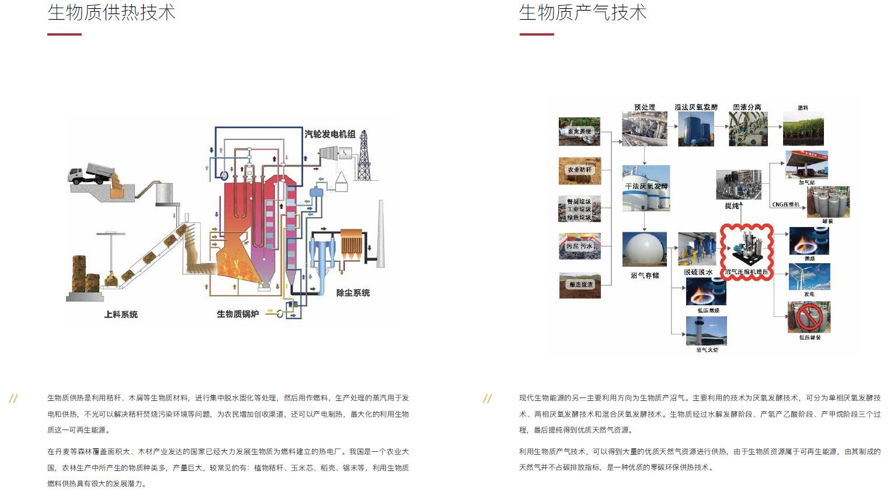
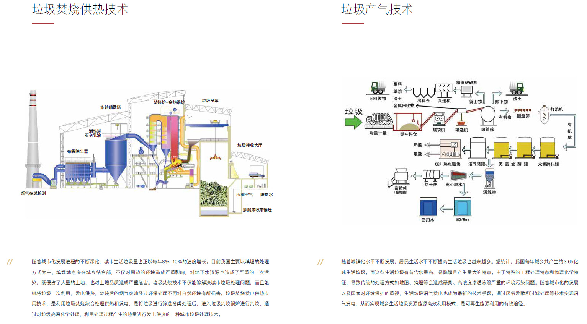
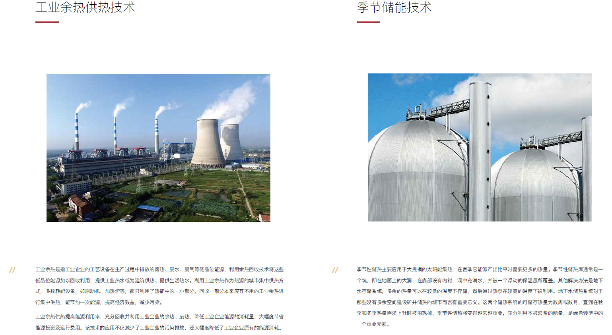

供热技术介绍
 1、未来供热发展趋势
1、未来供热发展趋势
综上所述，供热技术的不断升级进步，旨在提高机组设备的发热效率和热转换效率，提高可再生能源利用率，减少对生态环境的污染和人体健康的影响。未来供热将会利用更多可再生能源，进一步减少化石燃料的使用，余热回收、多元供热、智能控制等是供热行业的发展趋势，实现零碳排放供热甚至负碳排放供热的目标。
2、第四代供热技术
3、智能热源技术

4、智能热网技术
MCEP多元集中能源平台，是国能热源自主知识产权技术，是面向未来的第四代供热技术。左图为MCEP多元集中能源平台供热示意图，整个供热区域由多元清洁能源和可再生能源为主，传统化石能源供热为辅，综合供给热能。系统结合光热供热、干热岩供热、污水源热泵供热、水源热泵供热、垃圾焚烧厂余热回收、燃气热电联供、谷电蓄热、大型蓄能基地及智能供热管网，形成一个互动有机的整体。 MCEP多元集中能源平台重视整合所有可用能源，继续从各种来源中集成更多可再生能源和余热资源、能量存储以及供需之间的动态互动进一步确保了该系统的灵活性和高效性。既适用于新建供热系统，也适用于对现有供热系统的改造与扩建。 从能源使用角度来说可再生资源的使用比例开始迅速扩张。可再生资源使用的增加是为了满足政府规定要求的减碳目标。因为只有不再扩建任何基于化石燃料的热源，减碳的目标才能够实现。工业的余热利用和热电联产，也是大力推广的方向，进而将垃圾焚烧、热电联产作为基础热源、锅炉房作为调峰热源的大型复杂联合供热系统，多个热源配合使用，低品位能源提供基础负荷，高品位能源负责调峰负荷。一般供暖初期或供暖期结束前，供暖需求较少，只运行基础热源，减少了运行设备，降低了运行成本。因此多热源联合运行具有节能、高效、供热保障率高的优点。 最终建立热力市场自由化：统一的热力交易市场，通过国能热源实现多元热源之间的热力交互，形成稳定的热力交易市场，丰富整个供热管网供给的同时，增强了供热能力的可靠性，提高了整体能源的利用率，避免了余热的浪费。热力市场的建立会进一步统一供热市场，提高能效利用，减少碳排放。
5、二网与末端控制

供热系统中的水力不平衡现象较为严重，水力不平衡是造成供热能耗浪费的主要原因之一。水力失调分为静态失调和动态失调。静态失调是由于某些环路存在剩余压头，即某些环路的阻力过小时，这些环路的实际流量超过设计流量，由于总流量一定，则其他部分达不到设定流量，出现冷热不均；在动态系统中，当某些环路的水量发生变化时，会引起系统的压力分布发生变化，从而干扰其他环路，使其他环路发生本不应有的变化。国能热源水力平衡系统中使用平衡阀、混水器、自动控制系统来解决动态和静态失调的问题，保证用户舒适供热温度，消除供热失调问题。
对每一位供热用户进行精确控制，通过检测供热管网供回水温度、压力、流量、流速等参数，对末端用户进行精确控制，在满足供热需求的前提下，最大化的节省供热运营成本，做到按需供热。整套设备精密可靠，通过对终端用户的准确控制，为用户提供更好的供热体验，可以根据用户自身需求，制定个性化供热方案， 分时段供热，供热温度等需求全部可由供热用户自己把握。 操控合理，更加高效、人性化。
6、燃气冷凝锅炉供热

7、空气源与污水源供热

8、浅层地热与海水源供热

9、地热与干热岩供热

10、电蓄热与光热供热

11、生物质供热

12、垃圾处理供热

13、工业余热与季节储能

联系我们
地址 辽宁省大连市甘井子区
生态科技创新城C4座5楼
电话(1)：(0411)84910777
电话(2)：(0411)84910777
Email：dltech@sinoheat.com